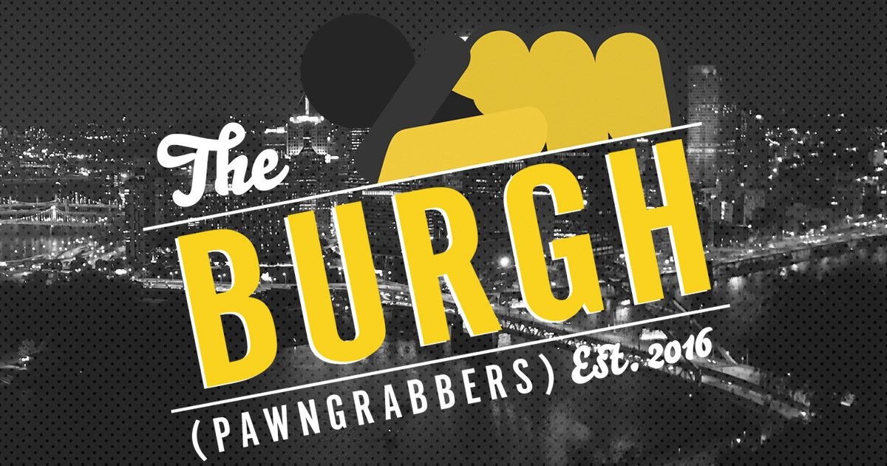

PRO Chess League Power Rankings
Week 8: Atlantic Division

This week had the most competitive matches all season, where no team scored below 7 or higher than 9. That made for some really exciting matchups this week, including the Marshalls' first regular season loss of the season. Now, the Arch Bishops look like they will claim the top spot in the division, and play either Montreal or Montclair in the first round. That would leave Webster and New York as the other matchup, and with the Pawngrabbers' devastating loss to the Arch Bishops, there are only 5 teams with any playoff hopes at this point. We also have an interesting race for 6th place now between the Champions and the Pawngrabbers, which gives the last two weeks some extra juice even for teams without playoff hopes. Teams need to be being their best chess of the year, and just look at this brilliant find from Durarbayli with Rxc6+!!
PRO Chess League Overview
This year, we will be doing a weekly power rankings list for teams in the Atlantic division. For those of you who don't know, the regular season of the PRO Chess League (PCL) is ten weeks long. Each week, teams will have to pick 4 players from their roster with an average standard rating (not blitz or rapid) of 2500 FIDE or less for each match. Every match consists of 16 games (aside from the Battle Royales) meaning every player plays 4 games, on rapid time control (15 minutes with a 2-second increment). At the end of the match, the winner of the match receives ten points for the win. Each will also earn as many points as points they earned in the match (i.e. If team A defeats team B 10.5-5.5, team A receives 20.5 points and team B receives 5.5 points). This means that every game matters, so even if a team has already lost, there is still reason to keep playing. If anything that I wrote was unclear, you can always see the
PRO Chess League Official Rules for further explanation. I'm looking forward to seeing the rest of the season, and hope you are too!

Want to support the Black and Gold? Be a part of the Pittsburgh Pawngrabbers' journey in 2019! Check out the Pittsburgh Pawngrabbers on Indiegogo to give your support!
Note: "PR" means previous rank (from last week)
1. Saint Louis Arch Bishops
(PR: 2) Points: 167
That was a close one. I think at 5-3, Arch Bishops fans were starting to worry that for the second straight year they would be upset by the Pawngrabbers. But they came through in the end, riding on Caruana's 3.5 out of 4, while So had an off day, scoring 2.5 out of 4. With that win and the Marshalls loss, they are in great position to earn the first seed in the playoffs. That bodes well for them because right now it looks like playing the Chessbrahs or Sopranos would be better than playing the Windmills; however, since the Chessbrahs already beat the Arch Bishops this year, maybe it would be better if they didn't have to play them in the first round. Regardless of who they play, they should be fine, but the chess we saw from them in the first two rounds of this match isn't going to get them anywhere, so this team still clearly has some work to do before the playoffs begin.
2. Montreal Chessbrahs
(PR: 5) Points: 130
The Chessbrahs handed the Marshalls their first loss of the season and this may act as the crucial turning point of the Chessbrahs' season. They now face the Sopranos in a match that will most likely decide the final playoff spot, and if they have found their stride, they could easily claim that final playoff spot. I liked their lineup choice this week against a well-rounded New York team, but I think this week will be very interesting to see what the Chessbrahs decide. I like the Giri-Saric-Hansen-Eschleman combination because I'm expecting the Sopranos to also use a top-heavy lineup and I think that this one is a little more talented since it has Giri. Regardless of what lineup they wind up going with, they need to ride the momentum of this week's win into next week's must-win matchup.
3. Webster Windmills
(PR: 3) Points: 138
The Windmills are now only 4.5 points ahead of Montclair and 8 ahead of Montreal thanks to a win by both Montreal and Montclair and a loss by the Windmills. Now they are in serious danger of missing the playoffs. That being said, I think they will still make it, especially considering that the Sopranos and Chessbrahs play each other this week, plus they get to play a Pawngrabbers team who has just had the wind taken out its sail by the Arch Bishops. The Windmills have made it harder on themselves than it had to be, but they are still in a good position to be playing playoff chess in a couple of weeks.
4. New York Marshalls
(PR: 1) Points: 156
I was not expecting this upset considering how hot the Marshalls had been and how cold the Chessbrahs have been, but I suppose the Chessbrahs needed the match a lot more than the Marshalls, so I can see why it happened. Grant Xu holds much of the blame for going 0 for 4 on board 4, but he has been so tremendous this season that I think it's reasonable that he has one off day. That being said, this loss puts them in the second seed in the division. If current standings hold, this sets them up with a rematch against the Windmills, whom the Marshalls narrowly beat in a dramatic comeback in week 6. I don't think this bodes well for the Marshalls since I think Webster matches up better against New York than Montreal or Montclair.
5. Montclair Sopranos
(PR: 4) Points: 133.5
That win against the Windmills showed just how much they want a playoff spot after mediocrity for most of the past 2 seasons, putting up a dominant performance in the first three rounds. Top board Guseinov is rolling right now, with a 3.5 out of 4 score to put him up to 9 out of 12 on the year. This new lineup they have been using is my favorite of theirs this year. They get to put Lenderman on board 3 as a 2600 rated player. They have to put someone like Dan Smith on board 4, but they have 3 really good players playing for them, so I think that this tradeoff is worth it. Additionally, their upcoming matchup with the Chessbrahs should be treated like a playoff match for both Montreal and Montclair, so I expect to see the same lineup again next week
6. Pittsburgh Pawngrabbers
(PR: 6) Points: 97.5
The Pawngrabbers' playoff chances were dashed this week in what was a really exciting matchup against the Arch Bishops. They were probably not going to make it even with a win, but this confirms that their season is over from a playoffs standpoint. Now, they are just fighting to escape relegation. With Miami's latest push, it seems like the Pawngrabbers will likely have to win this week against the Windmills to avoid sliding into the red. Postny had a strong performance this week, scoring an undefeated 3 out of 4, and Minh le was extremely close to beating both Wesley So and Fabiano Caruana back-to-back. After defeating So, he had what looked like a winning position against Caruana, but couldn't quite get it done. Regardless, that was still an extremely impressive showing from the IM.
7. Miami Champions
(PR: 7) Points: 95
This week, the Champions drew their first match of the season, and are now looking at potentially getting out of relegation territory. Eljanov went a perfect 4 for 4 while Itturizaga had an off day, only scoring 2.5 out of 4. The draw was against the Lions, but a win is a win, and they needed that badly. They still have not won a game in divisional play, but with this tie and their first place Battle Royale showing, they now are only 2.5 points behind the Pawngrabbers for the 6th spot in the Atlantic. If they can make up those 2.5 points, the turnaround that this team had gone through in the past two weeks will be one of the most impressive performances in the entire PRO Chess League.
8. London Lions
(PR: 8) Points: 82.5
That tie with the Champions was a hard-fought effort on both sides, but in terms of the standings, it has sealed the Lions' fate. Justin tan's 1 out of 4 let the team down, especially with 3rd and 4thboards Andrew Horton and Marcus Harvey combined for 4.5 points for the match. The only plausible way that they could avoid relegation now is if they win their match against the Marshalls and then finish first in the Rattle Royale, combined with a 7th and 8th place finish from the Pawngrabbers and Champions. That week 6 win against Montreal seems very long ago with relegation looming in two weeks.
Do you agree with our predictions? Let us know what you think by tweeting us at @pghpawngrabbers